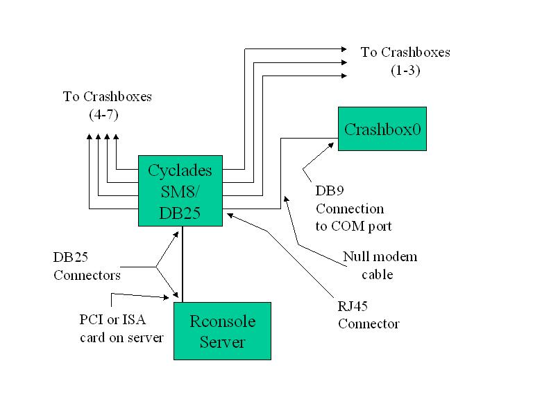

| Rconsole Set-up with Multiple Crashboxes Using an 8-Port Serial Module |
|---|
|  |
|
The serial module can be connected to either COM1 or COM2 ports. The serial module is connected to a specialized PCI or ISA card on the rconsole server machine. At the UW we have an expanded SM16 serial module expanded to 32 ports. Information on the serial modules and PCI cards can be found at http://www.cyclades.com/y-series.html.
Copyright (c) 1997 The University of Washington. All rights reserved.
|